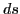

Derivative of the arc in rectangular coordinates
Let  be the length9.3 of the arc AP measured from a fixed point A on the curve.
be the length9.3 of the arc AP measured from a fixed point A on the curve.
Figure 9.2:
The differential of the arc length.
|
Denote the increment of (= arc PQ) by  .
The definition of the length of arc depends on the
assumption that, as Q approaches P,
.
The definition of the length of arc depends on the
assumption that, as Q approaches P,
If we now apply Theorem 9.3.1 to this, we get
In the limit of the ratio of chord PQ and a second infinitesimal,
chord PQ may be replaced by arc PQ (= ).
From the above figure
Dividing through by
, we get
Now let Q approach P as a limiting position; then
 and we have
and we have
(Since
.) Therefore,
Similarly, if we divide (9.3) by
 and pass to the limit, we get
and pass to the limit, we get
Also, from the above figure,
Now as Q approaches P as a limiting position
 , and we get
, and we get
(Since
, and
 .)
Using the notation of differentials, these formulas may be written
.)
Using the notation of differentials, these formulas may be written
and
respectively.
Substituting the value of  from (9.6) in (9.5),
the same relations given by (9.5).
david joyner
2008-08-11